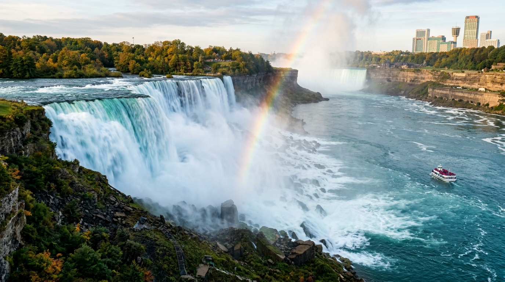
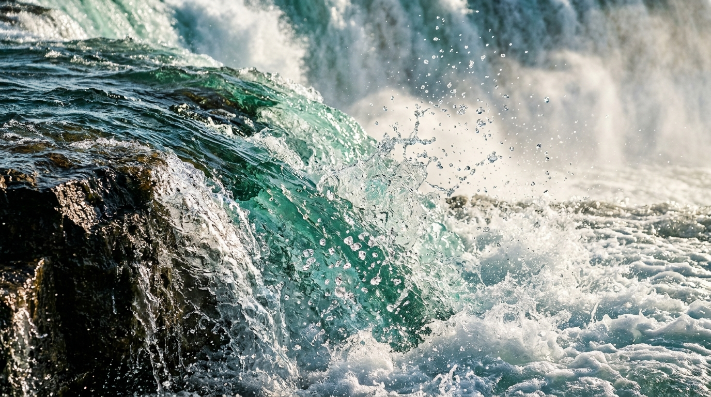

HYDROLOGY ARCHIVES
VOL. 14 • GLOBAL WONDERS
น้ำตกไนแองการ่า
NIAGARA FALLS
THUNDER OF GLACIAL MAJESTY
ม่านน้ำตกยักษ์ที่ทรงพลังที่สุดในทวีปอเมริกาเหนือ มวลน้ำกว่า 3,160 ตัน ถาโถมลงสู่หุบผาทุกวินาที ก่อกำเนิดพลังงานบริสุทธิ์และละอองน้ำหมอกที่โอบล้อมสายรุ้งนิรันดร์

[ FIG. 01 : HORSESHOE CURTAIN ]

[ FIG. 02 : KINETIC SPRAY ]
ละอองหยดน้ำควบแน่นกลางอากาศเหนือก้อนหิน
DUAL PERSPECTIVE
จากพลังทำลายล้างอันเกรี้ยวกราดของมวลน้ำมหาศาล สู่ความงดงามเปราะบางของละอองน้ำทุกหยดที่แตกกระจายในอากาศ